History 1919 - 1934
"A dispatch has been received by his Excellency the Governor from the Secretary of State for the Colonies, intimating that his majesty the King, has been pleased to institute a medal to be called the “Edward Medal” for courage in saving or attempting to save a life in mines or quarries within his majestys' domains. The act, in respect of which the bestowal is recommended, must have been performed in or about a mine or quarry either above or below ground. His Excellency the Governor is requested to forward to the colonial office any instances that may be brought under his notice of exceptional courage of the nature indicated."
Four Australians have received this Medal:
- Michael Lyons and John Shields, Mt Morgan Gold Mine, November 4, 1908
- Joseph Davies, Bendigo Gold Mine, July 16, 1909
- Frank Duller, Mt Morgan Gold Mine, July 12, 1918.
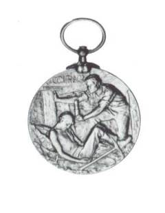
We start with the Q.A.T.B hospital in Ipswich where the first four mines rescue team members were based in 1909. They were miners working at the pits and honorary ambulance officers.
In the photograph, workers pose with an ambulance litter and sulky. The litter was pulled to the patient by the sulky, usually pulled by a white horse. The litter was then pushed to the hospital by hand. A lantern would hang from the litter at night. On nearing the hospital, a bearer would blow a whistle and a wardsman would open the gates.
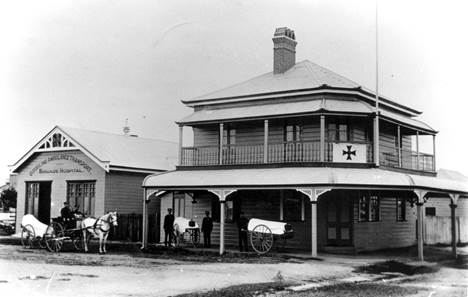
Q.A.T.B Hospital, Corner Downs & Flint St North Ipswich in 1912
With the steady expansion of the coal mining industry on the West Moreton field, and the opening up of new pits, and the need for improved safety in the mines, the Queensland Department of Mines initiated a move in November 1909 to establish a Mines Rescue Brigade. The Department suggested that three miners from each mine be trained in first-aid and rescue methods. The government offered to provide a small subsidy.
"The minister for mines, the Honorable J.G Appel, has arranged the Ambulance Brigade to take over the superintendence of the station and the necessary training of miners in rescue work."
Three different committees were appointed to:
- enquire into and report on the best class of premises to provide for the accommodation of the rescue apparatus
- report on the best method to adopt for affording instruction to the colliers who may become honorary brigade members
- make enquires into the class of smoke helmets best adapted for the district.
Subsequently a meeting was held in the Ipswich Council Chambers on August 13, 1910. Those present included:
The Mayor, Alderman M .Bowers, (who presided); Mr. J.A Elliott (member of the Ipswich ambulance centre committee); Mr. W.C. Tomkins (Superintendent Ipswich ambulance); Hon. A.J. Thynne, M.L.C, (President of the Queensland Ambulance Transport Brigade); Messrs. W.H. Bell (Chairman of the Brisbane Ambulance Centre); J. Thomas, (local Inspector of Mines); D. Gledson and James Pryde, (representing Queensland Colliery Employees Union); R. Lindsay and Alexander Orr, (representing the Mine Managers); and Joseph Stafford, (representing the Colliery Proprietors).
The meeting voted enthusiastically for the early establishment of a Rescue Brigade and appointed a committee to act with the Q.A.T.B and local inspectors of mines in taking the necessary steps for its formation.
A further meeting was held at the Oddfellows Hall, Bundamba, on August 25, and six of those present volunteered to undergo a course of instruction in first-aid and the use of Rescue Apparatus.
Previously, four coal miners had been attached to the Ambulance Brigade for rescue work when required for mining accidents, and these, with the six new volunteers, made a team of ten experienced miners available for work in collieries that necessitated the use of Smoke Helmets.
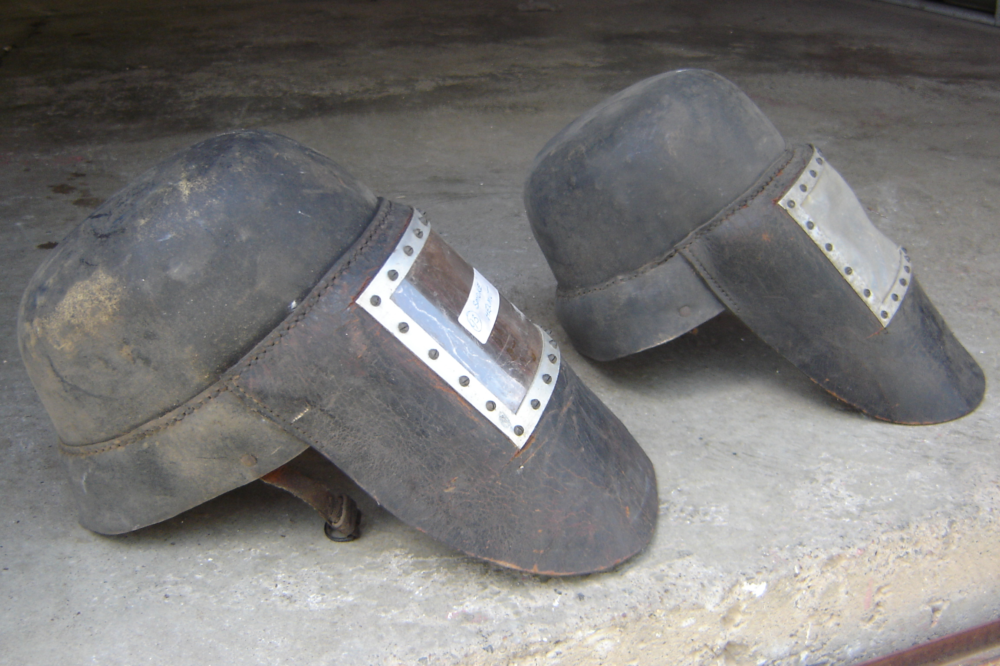
Two of the original leather smoke helmets used in 1909 - 1910.
A committee, which had been appointed to deal with the organisation and training of volunteers, then submitted the following recommendations for approval by the authorities.
- The Rescue station be incorporated with the ambulance brigade, Ipswich, and controlled by a local committee, together with such representatives from the mining industry as they (ambulance committee) may consider necessary to assist them in practical working of the station and that the mines Department should also be represented on the committee.
- That the station be established in Ipswich and the necessary building and appliances be erected or stored on the ambulance property, North of Ipswich, and to be under the control and supervision of the Superintendent of the committee.
- That the committee make an effort to get a sufficient number of practical men as representatives of the various mines, to act as ambulance bearers and rescue workers.
- That the Superintendent or some other competent person or persons be instructed by the committee to instruct the students in ambulance and rescue work.
This report was furnished to the Mines Department and approved.
The Minister for Mines, the Hon. J.G. Appel, advised that provision had been made on the estimate of an expenditure of £600 for building and plant.
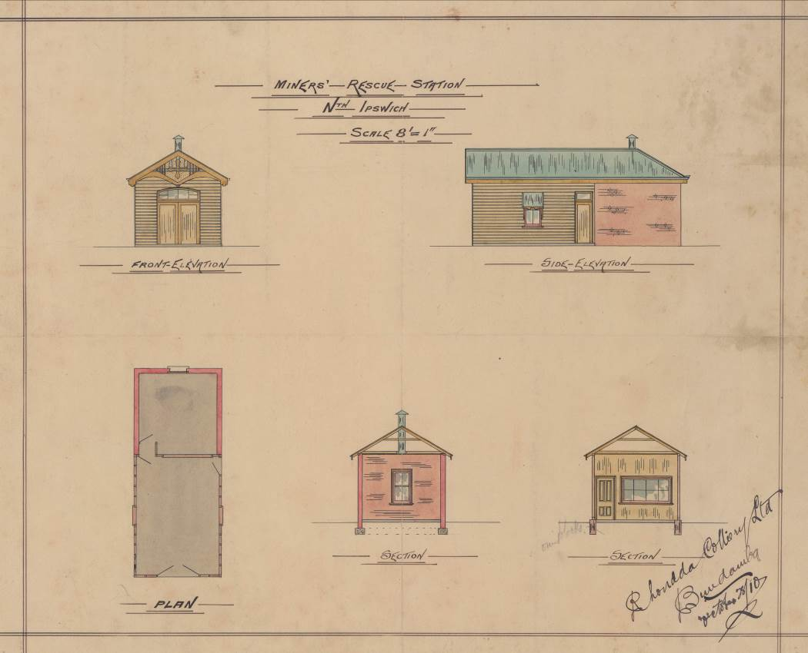
Original plan of first station drawn by W. Haenke October 1910
H.A. Fleuss, in association with Siebe, Gorman and Co, has the credit for the first design (in 1878) of a practicable self containing breathing apparatus, embodying air regeneration devices, for work underwater or in poisonous atmosphere. R.H. Davis, who entered Siebe, Gorman and Co’s service in January, 1882, worked for some years in collaboration with Fleuss until the latter’s retirement. A notable early operation, in which the self-contained diving-dress was used, was at the flooded Severn Tunnel in 1882.
For some years prior to 1902 interest in apparatus of this type had waned; there was practically no demand for it, and during that period little research was carried out. Davis, however, having faith in its possibilities, revived it, and invited Fleuss, who had in the meantime given up work in this field, to collaborate with him in improving and developing it, with the result that, for some years before the outbreak of war, Siebe, Gorman and Co. Ltd possessed the only British apparatus of the kind – thoroughly reliable, efficient and well-tried apparatus - the PROTO and SALVUS which were adopted by British, American and other of the Allied forces for mining, tunnelling and other military operations in poisonous air. Similarly, R.H. Davis designed oxygen breathing apparatus for airmen flying at great altitudes. This also was adopted by the Air Ministry.
Thus, Siebe, Gorman and Co. Ltd. were responsible for producing the whole of the self-contained breathing apparatus for the British and other armies mentioned, diving apparatus for the British Navy and Army, and oxygen breathing apparatus for the Royal Air Force, besides a variety of special work for all of the services.
Fleuss' first apparatus made by Siebe, Gorman and Co. Ltd in 1878 comprised mainly of a mask of rubber-proofed fabric covering the whole face; a breathing bag and a copper cylinder, charged with oxygen compressed to 30 atmospheres, both carried on the back behind the breathing bag. Later the breathing bag was arranged in front of the wearer. With the oxygen cylinder and CO2 absorbent chamber remaining on the back.
The newer version of these units made it to Australia as early as 1902 when Edward Cole used this “gas mask” to recover 11 bodies at the Mt Kembla mine disaster 31.7.1902 to 3.8.1902. (Note: breathing bag on front.)
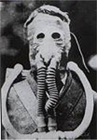
First breathing apparatus used in Ipswich, the Fleuss breathing apparatus
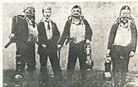
Fleuss and 3 members of the rescue party at the Seaham explosion 8th Sept 1880; this is the first recorded time a breathing apparatus was used for rescue in a mine and the earliest photo available.
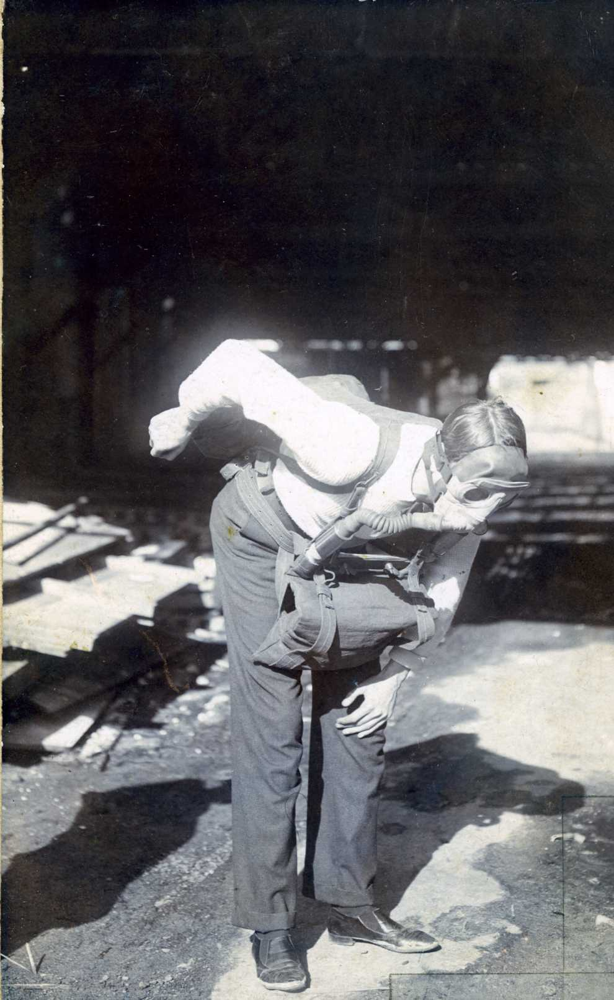
Edward Cole demonstrating the apparatus in 1902
Written on photo believed to be Edward Cole’s hand writing
“Fleuss breathing apparatus for coal mines etc. Siebe Gorman & Co London (inventors).”
In 1911, committee members comprised the following: Messrs. J.A. Elliott Chairman, W.C. Tomkins, Secretary, W. Morris, D.A. Gledson, W. Binnie, J.A. Thomas and George Turner, Instructor. George, a Q.A.T.B. employee, is the first recorded instructor on Mines Rescue. A. Ruddock was also assisting Mr. Turner, however the committee only recognised one instructor, and Mr. Turner would share his £5 payment with Mr Turner each month. This payment fell to £4 in August of 1922.
On January 24 1912, the tender from Messrs. O. Perry and W. Betts for £196 to erect a Rescue Station on the property of the Ambulance Brigade at North Ipswich was accepted. The Mines Department agreed to pay half the cost of building and equipping the Brigade, as well as supply apparatus at a cost of approximately £300. Six sets of Fleuss-Davis “Proto type” breathing apparatus were acquired plus two reviving apparatus and six large cylinders to store oxygen.
The building was designed by architect Mr. M W Haenke and completed June 29 1912. It stood adjacent to the QATB hospital North Ipswich. It was 10.3 metres by 4.2 metres and the floors were concrete with a foundation of four inch bar iron to prevent it from buckling. There was a 4.2 sq.m back room used as a fumigation (smoke) room while the front section kept vehicles to “obey any summons”. Water and gas were connected.
The Department also continued to pay £40 a year towards the salary of the instructor. The first permanent rescue instructor Mr. Thomas W Smith, (a miner from Abermain who had trained with Felling Colliery team) was appointed. Mr Smith resigned in 1914. G. Turner, also a practical miner, took over instruction.
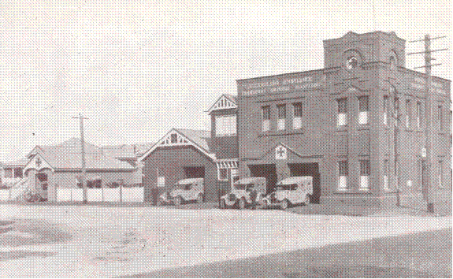
Australia’s first Mines Rescue station completed June 29 1912, officially opened by minister in 1915
(Photo taken in approx 1935)
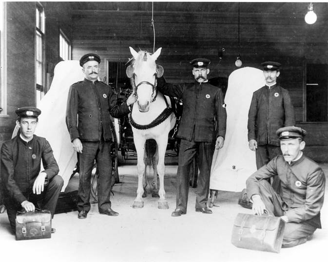
Superintendent Tomkins (holding horse on left)
On October 21, 1912, inspector Lawrie authorised rescue apparatus to be sent to Ipswich ambulance station.
John Hall, a mining consultant, was criticized from the outset for putting the station in North Ipswich because most mines were South of the river and men were unwilling to travel there for training sessions. When Smith left for America in 1914, work came to a halt and was only partly rectified by paying the men a small amount to attend training.
A turning point came after a disaster at Cardiff Colliery at Blackstone in 1919 when the rescue operations were criticised for arriving late and not functioning properly.
A practical demonstration of Miner’s Rescue apparatus at Ipswich was reported to be the first occasion in Australia for such a demonstration. The demonstration took place in the colliery known as Nobel’s Denham Colliery, which, for most of 1911 had a fire raging underground and the colliery had been sealed down. With the view of opening up the lower workings again, arrangements were made with Superintendent W.C. Tomkins of Ipswich Ambulance center to convey three sets of Fluess-Davis “Proto” apparatus to the mouth of the colliery. When Messrs Tomkins and bearer G. Turner arrived on site, they were greeted by inspector W.E. Lawrie and Messrs Alex Lawrie (Superintendent of the Noble Vale Collieries) and E.G Wall (manager of the Denham Colliery).
The objective of using the apparatus was to proceed underground 160 yards (145 m) and open a door. This would cause air to travel in such a direction as to protect the workings to be worked from the fire area. It was also intended to give a practical illustration of the utility of the apparatus.
Heat at the mouth of the tunnel was around 160°F (71°C). Messrs W.E and A Lawrie each had a set of equipment charged with oxygen fixed on them. The weight of each set was 32 lbs (14.5 kgs). Fire helmets were worn and electric lamps were carried. First to go into the tunnel was Inspector W.E. Lawrie who returned after half an hour and reported he had managed to open the door. After a short time he and Mr. A Lawrie went below and when they returned after 20 minutes they stated the heat was terrible but the apparatus had worked very well. Superintendent Tomkins was pleased with the result of the first practical demonstration of the rescue apparatus, and felt it would act as a stimulus to mine managers to become aware of this provision for rescue work. Mr. David Gledson, secretary of the Queensland Colliery Employees Union, was also present. He had a set of the apparatus fitted, but did not go below. He remained in the protector long enough to satisfy himself about its effectiveness.
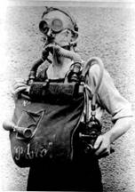
Arthur Clifford, England, demonstrates Proto Mark IV 1911.
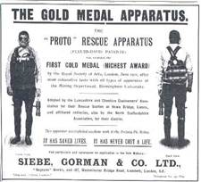
Advertisement “The Colliery Guardian July 14 1911”
The first station was opened early in 1915 by Mr. W. Hamilton, Minister for Mines.
Mr. Hamilton promised to contribute to the upkeep of the station to the extent of not exceeding £20 per month. The contribution was later divided between the Insurance Commission, Colliery Proprietors Assoc, and the Department, contributing one third each.
It is believed that during this year the brigade took delivery of the newer “Proto Mark IV” which had been made available in 1911 in England by Siebe Gorman.
An example of the use of rescue apparatus during World War One. “A view of the Mine Rescue Station of the 3rd Australian Tunnelling Company, at Hulluch Tunnels, during Battle of Loos in France. The photo depicts Sapper Kelly on duty, wearing the proto-apparatus and carrying a canary (or white mouse) for testing air conditions underground. Owing to the poisonous gas (carbon monoxide) formed by explosions, much of the mine fighting had to be done by men wearing this kind of protective apparatus. The 3rd Australian Tunnelling Company had several such mine rescue stations in their forward subways as well as in the Infantry subways for rescue purposes or mine fighting when necessary.”
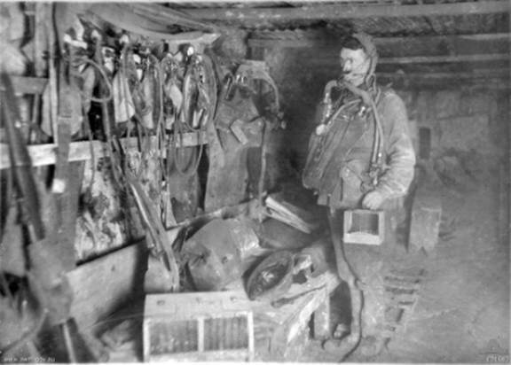
(Photo in the Australian War Memorial - Canberra. Sapper Eugene Kelly, 3rd Australian Tunnelling Company)
Annual QATBH report shows:
- there were now 18 rescue members
- training days for the year were 23 practices at Silkstone, 23 at Bundamba and 22 in smoke room
- the First Mines Rescue competition in Australia was held on June 3.
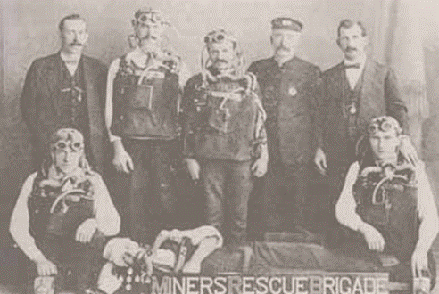
Bundamba “Miners Rescue Brigade”. The winners of first rescue competition held on June 3 1916. Rear from left are:
David Gledson M.L.A, judge, J. Elliot, G. Coombes, G. Turner instructor, W.E. Lawrie inspector of mines and judge, front row from left T. Sharp Capt, Albert Chandler and F. Cordingley
There was much dissatisfaction amongst Brigade members and, on November 21, 1918, all members resigned on account of their grievances not being addressed. (This happend again on February 25, 1919.)
Whilst recognising that the state of affairs could not be accepted, it seems the greatest obstacle in reinstituting the brigade was in raising funds. After several meetings between the coal proprietors, Department of Mines and the Insurance Commissioner, it was agreed that the brigade be funded by three equal shares from these parties.

Photo of the Silkstone Branch, dated, December 1916.
After the Cardiff Colliery Disaster, the Minister for Mines, the Hon A.J. Jones summoned a special conference in April, comprising the Insurance Commissioner, Colliery Proprietors Assoc (represented by Mr. F.J. Walker) and Mr. C.F.V. Jackson (Chief Inspector of Coal Mines) to discuss the advisability of reorganising and placing the station on a better footing. Those present expressed their willingness to contribute one third each to the cost.
As a result, the Mining Act Amendment of 1920 made provision for the establishment of a Rescue Station as may be decided by the minister, and for the expenses in connection therewith to be paid in equal proportions by the Government, Insurance Commission, and the Colliery Proprietors Assoc.
In May 1919, the Brigade's men rejoined, with the assurance of their own rescue station and sufficient funding.
At 0930 the locals were shaken by a loud explosion heard up to 25 kms away. The blast blew the winding plant high into the air and shattered the ventilating fan.
Centrifugal fans and 20 rescue volunteers were sent from Cairns, another 25 volunteers rushed from Mareeba and 40 arrived from Chillagoe.
10 days after the explosion rescuers were still finding bodies. Ronald Butler was never found.
May 5, six new Proto suits arrive at a cost of £35 each from Reid & Nephews of Brisbane who imported them from England.
August 4, due to the lack of practice attendance by some members, the committee decided to introduce an attendance book recording the date and type of practice each person completed, i.e. “In smoke room under fumes" or "field practice” and that 12 practices per year must be attended in the smoke room under strong fumes if they were to remain in the rescue brigade.
A probationary period of 6 practices needed to be served before acceptance to the brigade.
September 15, "a period of no more then 3 months shall elapse between smoke room practices" was added to member requirements. This rule was to be enforced immediately by the instructors and is still the rule today.
At the same meeting the secretary was asked to write to the minister for railways to arrange a meeting regarding the carriage of men and equipment around the loop line to the various pits and for a piece of ground near the rail line to build a small house to place the apparatus in.
A letter from Mr. Stewart of Baralaba via Mt Morgan was submitted to the committee asking if he could join the rescue brigade even though he was working in the mine at Baralaba. He was sent a letter stating the advisory committee had no jurisdiction over miners in North Queensland.
October 6, Messrs. Walker, Gledson, and Stafford, reported their meeting with the commissioner for railways was very successful. He promised his assistance in procuring an engine and carriage when required to run the men and apparatus around the loop. They also met with the minister for mines and he was favorable to reorganising the workings of the station and brigade.
The secretary was instructed to write to the minister for land to secure a piece of land on the reserve at Bundamba near the football ground, and close to the line and Brisbane road. The estimated cost of land, rescue station and instructor's dwelling was £1000.
The secretary was also instructed to write to the contributing bodies regarding the new scheme put forth by the advisory committee including the ambulance committee. They requested the contributing bodies to sanction: the removal of apparatus to Bundamba or a suitable location close to the rail loop leading to the coal mines; the take over of the station and reorganising the working of same by the advisory committee; and appointing a permanent man in charge qualified as an instructor.
November 3, new silver Badges had arrived and a presentation function was to be set to present these to all trainees.
December 1, department of public works approves the block of land for mines rescue purposes.
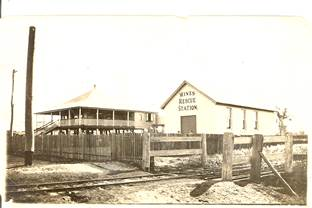
Photo of Residence and Mines Rescue Station (sent to Mrs. Hoepner)
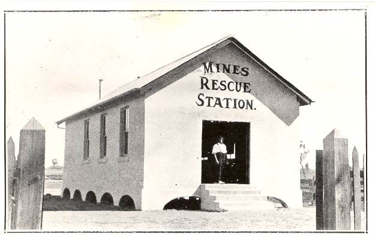
Front of station
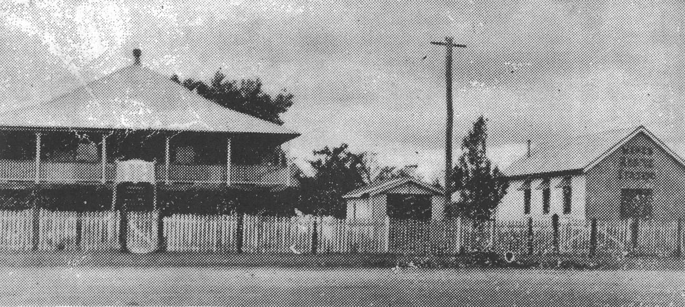
Station and residence in the 1930’s
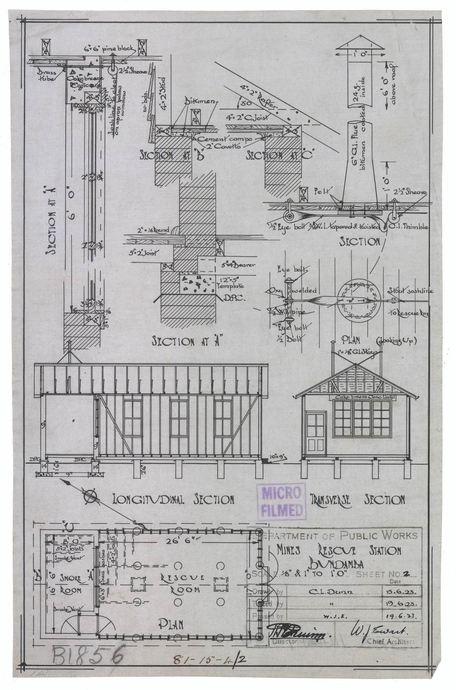
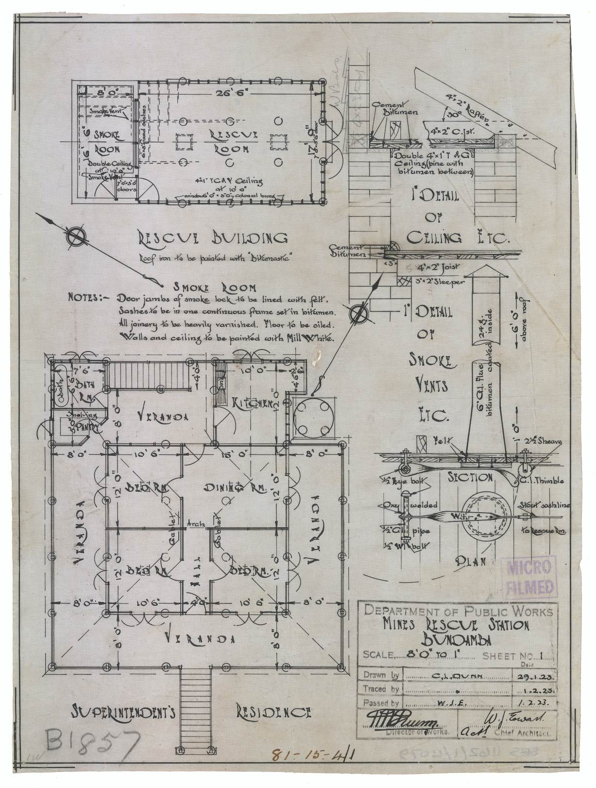
Mines Rescue Station Bundamba Plans - 1923
April 30. The advisory committee to go ahead with the offer from the mines department for a dwelling at Roma oil bore to be pulled down and transported to the new mines rescue site at Bundamba and put on 8 foot stumps as the instructor's residence. And it recommends a salary of £350 for the new instructor with a free house to live in.
After a number of mishaps with training practices and suits failing, the committee advised the ambulance committee that a full time instructor needed to be appointed and needed to come from among the brigades' men for a term of 12 months. Six applications were received: A. Urmson, G. Allen, A. Ruddock, A. Hoepner, C. Holland and J. Strang. Mr A. Hoepner was the successful candidate, but he was still employed by the ambulance.
June 30. Mr. G. Turner was relieved of his position as instructor after 12 years.
July 30. The plans received from the mines department of the proposed new rescue station.
September 17. Tthe instructor's residence was re-erected at a cost of £173 and new fence was completed for £49. Mr. Nielson’s tender for £310 was accepted to construct the new rescue station out of concrete to the plans supplied by the mines department.
October 26. A. Hoepner was appointed as permanent instructor of mines rescue. He was paid £6 weekly with two weeks annual leave.
December 1. The station was officially opened by the Minister of Mines the Hon. A.J. Jones who was presented with a gold Yale key in honor of the occasion. After officially declaring the new station open, the minister presented silver badges of efficiency to the following Brigade members; J. Rollo, S. Trewick, R. Tait, F. Diflo, A. Urmson, J. Oliver, J. Taylor.
A.J. Jones was one of the three founding members of the Australian Labour party who met in Blackall and decided to call a meeting in Barcaldine where they formed the Labour party. He went on to become the Minister for Mines.
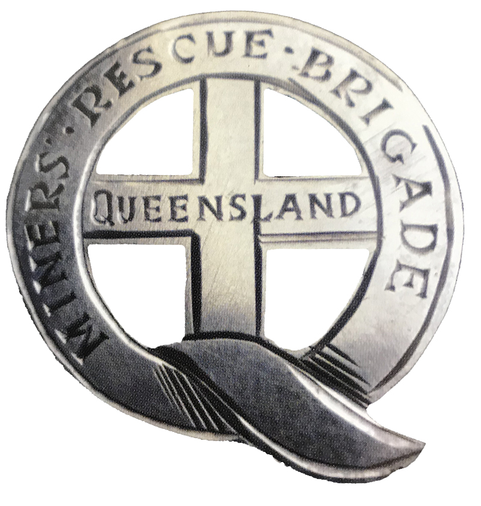
The badge is pure silver and was hand made by Goldstein’s Jewelers of Brisbane. There are only two surviving badges of the original 20 that we know of.
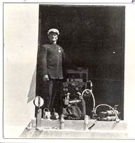
Mr. Albert Hoepner. The first full time Instructor, standing in the doorway of the Mines Rescue Station in 1923.
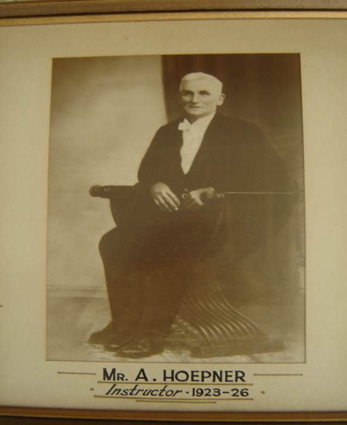
Born 2nd March 1882, died 22nd Feb 1947
Resigned as superintendent October 1926
Sept 24. Mines rescue take delivery of their first Ford Motor truck for transporting men and equipment. It was stored under the instructor's residence. Cost £210 without hood.
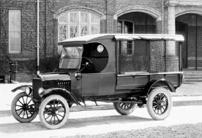
January and February. Men from Mt Mulligan and Bowen trained at Booval in breathing apparatus.
April. Stick caustic being made at Booval for Bowen rescue members.
(Note that this photo is one of the best around of early Proto suits.)
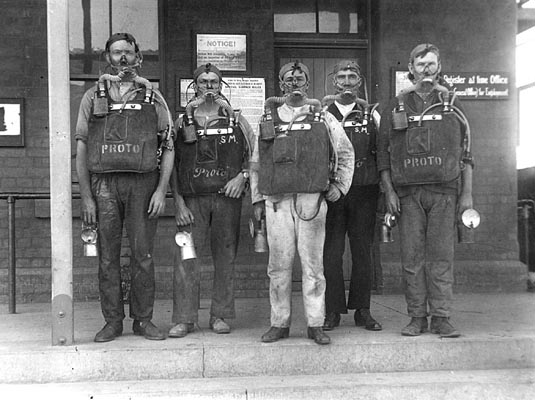
Broken Hill South, squad wearing Proto jackets for rescue work underground 28-8-1919
The Coal Mining Act was passed. This legislation covered the funding and running of the brigade and formed the basis of legislation addressing the subject of rescue brigades.
Section 76, provided that the minister may identify localities in which rescue brigades are to be established and those organisations which will be entitled to provide representation on the committees of management responsible for control of individual brigades.
“A single committee was responsible for Mines Rescue until 1965.”
23 April. At 0800, Redbank Colliery, Ipswich, four lives were lost in a gas explosion.
The Rescue Brigade was called in and later in the day recovered the bodies.
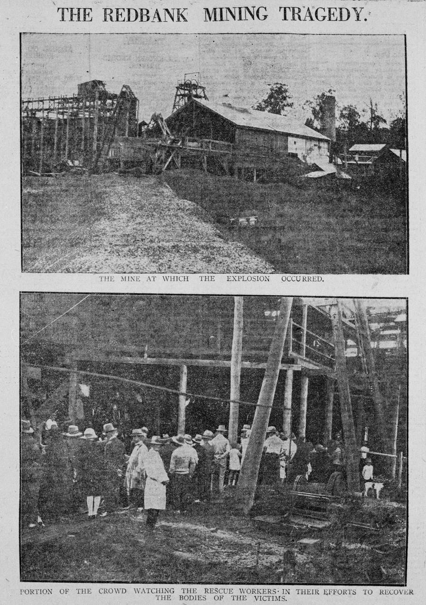
November 1. In line with government reduction in salaries, Instructor Crozier’s salary was reduced to £300 per year.
Redbank Colliery disaster, two men killed, Booval attended.
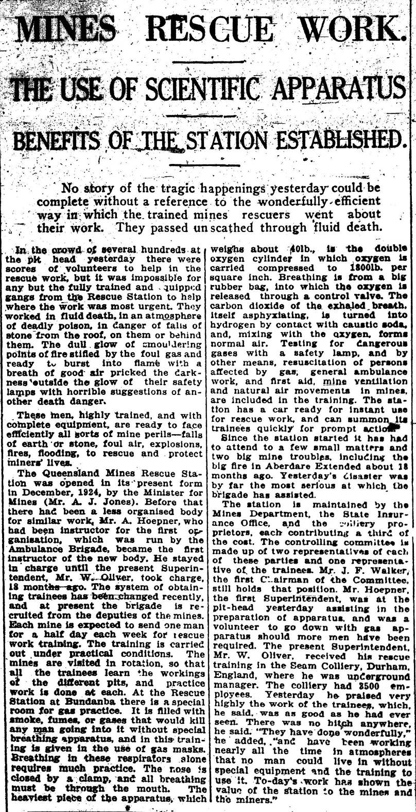
Queensland Times Newspaper Ipswich